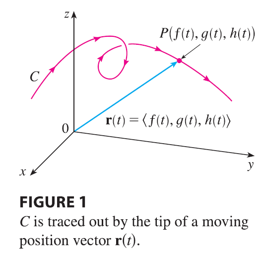
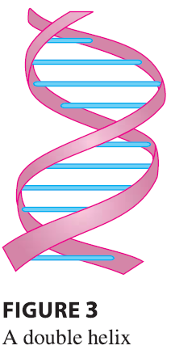

There is a close connection between continuous vector functions and space curves. Suppose that \(f\), \(g\), and \(h\) are continuous real-valued functions on an interval \(I\). Then the set \(C\) of all points \((x, y, z)\) in space, where \[ x = f(t) \quad y = g(t) \quad z = h(t) \tag{2} \] and \(t\) varies throughout the interval \(I\), is called a space curve. The equations in (2) are called parametric equations of \(C\) and \(t\) is called a parameter. We can think of \(C\) as being traced out by a moving particle whose position at time \(t\) is \((f(t), g(t), h(t))\). If we now consider the vector function \(\mathbf{r}(t) = \langle f(t), g(t), h(t) \rangle\), then \(\mathbf{r}(t)\) is the position vector of the point \(P(f(t), g(t), h(t))\) on \(C\). Thus any continuous vector function r defines a space curve \(C\) that is traced out by the tip of the moving vector \(\mathbf{r}(t)\), as shown in Figure 1.

EXAMPLE 3 Describe the curve defined by the vector function \[ \mathbf{r}(t) = \langle 1+t, 2+5t, -1+6t \rangle \]
Plane curves can also be represented in vector notation. For instance, the curve given by the parametric equations \(x = t^2 - 2t\) and \(y = t+1\) could also be described by the vector equation \[ \mathbf{r}(t) = \langle t^2 - 2t, t+1 \rangle = (t^2 - 2t)\mathbf{i} + (t+1)\mathbf{j} \] where \(\mathbf{i} = \langle 1, 0 \rangle\) and \(\mathbf{j} = \langle 0, 1 \rangle\).
EXAMPLE 4 Sketch the curve whose vector equation is \[ \mathbf{r}(t) = \cos t \mathbf{i} + \sin t \mathbf{j} + t \mathbf{k} \]
The corkscrew shape of the helix in Example 4 is familiar from its occurrence in coiled springs. It also occurs in the model of DNA (deoxyribonucleic acid, the genetic material of living cells). In 1953 James Watson and Francis Crick showed that the structure of the DNA molecule is that of two linked, parallel helixes that are intertwined as in Figure 3.
